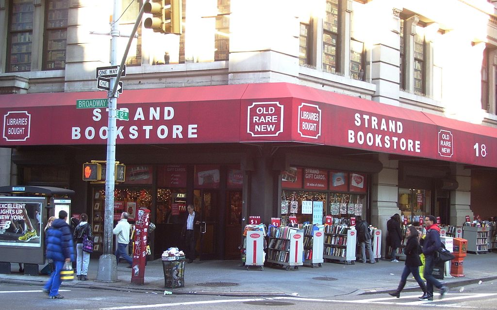

From Wikipedia, the free encyclopedia
Strand Books
The Strand Bookstore is an independent bookstore located at 828 Broadway, at the corner of East 12th Street in the East Village neighborhood of Manhattan, New York City, two blocks south of Union Square. In addition to the main location, the store's Central Park kiosk is open on fair weather days at the corner of Fifth Avenue and East 60th Street. The company's slogan is "18 Miles Of Books", as featured on its stickers, T-shirts, and other merchandise. In 2016, The New York Times called The Strand "the undisputed king of the city’s independent bookstores."
The Strand's basement holds its collection of review copies of recently published books.
The Strand was opened by Benjamin Bass in 1927 on nearby Fourth Avenue, in what was known as "Book Row", which was established as early as 1890, and which had at the time 48 bookstores. Bass's son Fred took over the business in 1956 and soon moved the store to the present location at the corner of East 12th Street and Broadway.[4] Fred's daughter Nancy is co-owner of the store, and is also married to U.S. Senator Ron Wyden of Oregon. The store occupies three and a half floors, using half a floor for offices and one additional floor as warehouse space. As of July 2016, the store had 2.5 million books.
Besides the main store and Central Park kiosk, an additional location, the "Strand Book Annex", opened in the 1980s and was originally located on Front Street in the South Street Seaport complex. It moved in 1996 to Fulton and Gold Streets in the Financial District, but finally closed on September 22, 2008 due to rent increases.
The Strand is a family-owned business with more than 200 employees.[4] Many Lower East Side artists have worked at the store, including two rock musicians of the 1970s: Patti Smith – who claimed not to have liked the experience because it "wasn't very friendly"– and Tom Verlaine, who was fond of the discount book carts sitting outside the store.
The Strand has had a unionized workforce for over 35 years.[9] On April 5, 2012, unionized workers at the store rejected a new contract. Further talks were planned between the two parties.[10] On June 15, 2012, workers ratified a new contract with the store.